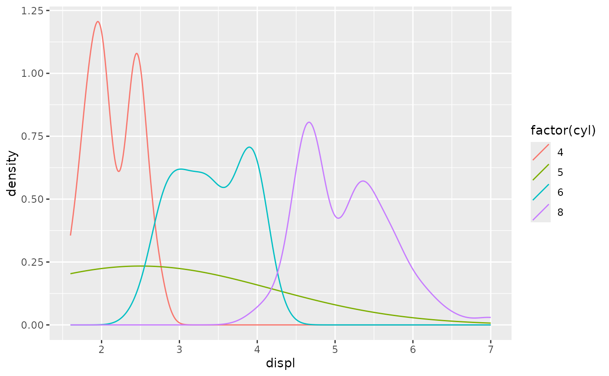
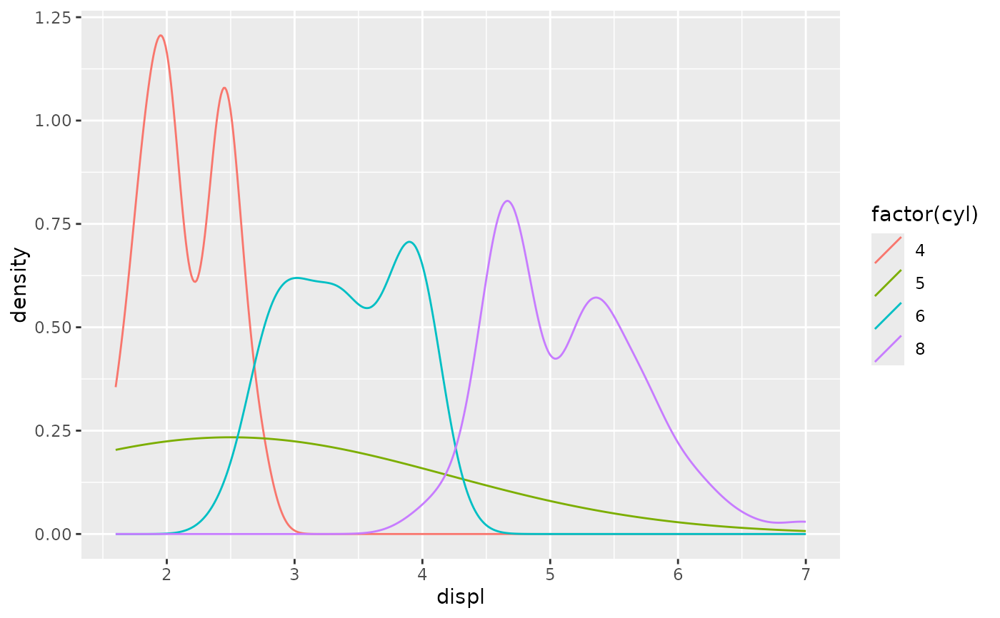

Like any legend key glyphs, this key can be used to display arrows in a legend.
Examples
ggplot(mpg, aes(displ, colour = factor(cyl))) +
geom_density(key_glyph = draw_key_arrow)

Like any legend key glyphs, this key can be used to display arrows in a legend.
ggplot(mpg, aes(displ, colour = factor(cyl))) +
geom_density(key_glyph = draw_key_arrow)
